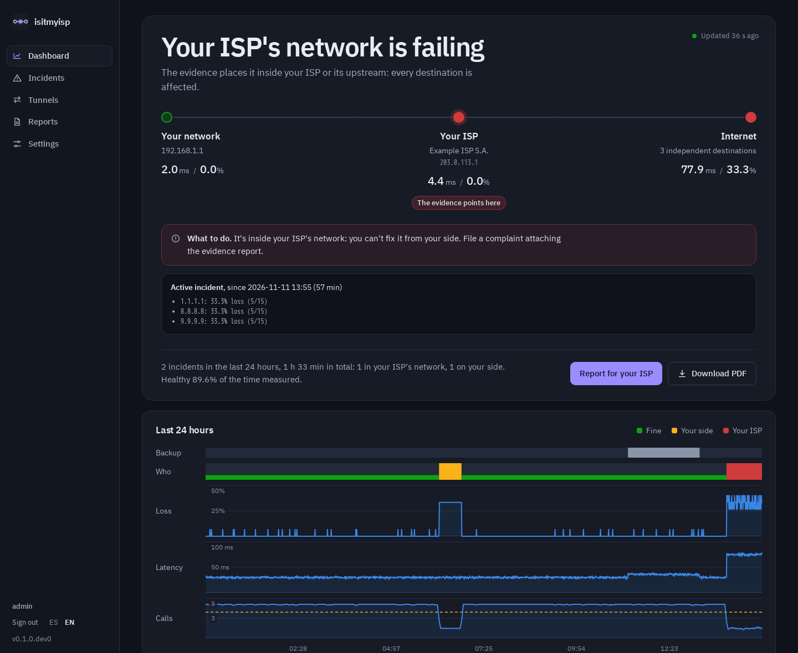

Is it your Wi-Fi, your router or your ISP?
A self-hosted monitor that tells you whose fault an outage is, and builds the evidence your ISP needs.

A self-hosted monitor that tells you whose fault an outage is, and builds the evidence your ISP needs.